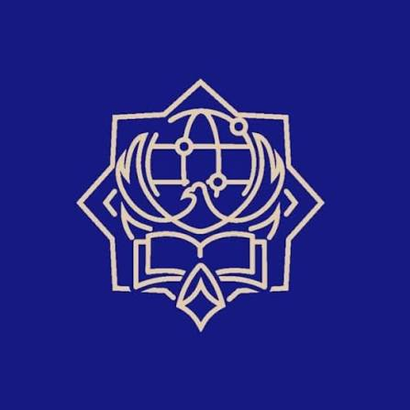

A state (public) specialized secondary school for exact and natural sciences, founded in 2022. It is governed by the Agency for Specialized Educational Institutions under the Ministry of Education and Science of the Republic of Uzbekistan, which runs Uzbekistan’s Presidential, creative and specialized schools. The school is in Kegeyli, a rural district of the Republic of Karakalpakstan.
Admission is selective: students enter through competitive entrance examinations held by the Agency at Grade 5 and Grade 7. Tuition is free.
School year 2 Sep 2026 – 25 May 2027, four terms. Classes Monday–Friday, 45-minute periods. Uzbekistan has 11 years of general schooling; Grade 11 is the final year.
Graduates receive the State certificate (attestat) of complete general secondary education, issued to students who pass all Grade 11 subjects and the state final examinations. Many also take the national subject certificate exams and international tests (IELTS, SAT).
National curriculum of Uzbekistan with an extended programme in mathematics, physics and English. All courses are compulsory; the school does not offer AP or IB courses and does not weight grades.
| Grades 10–11: weekly periods (45 min) | Periods |
|---|---|
| Mathematics | 7 |
| Physics | 5 |
| English | 4 |
| Computer science | 2 |
| Karakalpak language & literature | 4 |
| Uzbek language | 2 |
| Russian language | 1 |
| History | 3 |
| Pre-conscription training | 2 |
| Physical education | 1 |
| Character education | 1 |
| Total per week | 32 |
Mathematics, physics, english, computer science, uzbek language, russian language are taught in half-class groups. Biology, chemistry, geography, art and technology are taught in the lower grades.
| Mark | Meaning | Approx. US |
|---|---|---|
| 5 | Excellent (a’lo) | A |
| 4 | Good (yaxshi) | B |
| 3 | Satisfactory (qoniqarli) | C |
| 2 | Unsatisfactory (qoniqarsiz) — fail | F |
The school does not rank students. US equivalents are approximate and for guidance only.
ChSB: the official state assessment of student knowledge, set and marked outside the school. Number of students by mark.
| Subject | Students | 5 | 4 | 3 | 2 | Average |
|---|---|---|---|---|---|---|
| Mathematics | 34 | 11 | 23 | 0 | 0 | 4.32 |
| Physics | 34 | 5 | 29 | 0 | 0 | 4.15 |
| Chemistry | 22 | 3 | 19 | 0 | 0 | 4.14 |
| Class of | Graduates | University | College | Continuing | With a certificate* | IELTS | SAT |
|---|---|---|---|---|---|---|---|
| 2023 | 14 | 13 | 1 | 100% | 0 | 0 | 0 |
| 2024 | 31 | 30 | 1 | 100% | 7 | 1 | 0 |
| 2025 | 40 | 35 | 4 | 98% | 28 | 5 | 2 |
| 2026 | 56 | 53 | 0 | 95% | 53 | 4 | 2 |
| Total | 141 | 131 | 6 | 97% | 88 | 10 | 4 |
“Continuing” = enrolled at a university or college in the autumn after graduation, from school records reported to the Agency. *Graduates holding at least one national subject, CEFR or IELTS certificate. IELTS and SAT columns count graduates with that test.
53 of 56 graduates (95%) entered 18 universities; the class earned 118 national and CEFR certificates.
| Most frequent destinations | Students |
|---|---|
| Karakalpak State University | 25 |
| Nukus State Technical University | 5 |
| Nukus State Pedagogical Institute | 5 |
| Karakalpakstan Medical Institute | 2 |
| Uzbekistan State World Languages University | 2 |
| University of Innovation Technologies | 2 |
| 12 other universities | 12 |
10 offers to 3 students of the Class of 2025 from 9 universities in the USA and the UK. All three chose to study in Uzbekistan. QS = QS World University Rankings 2025; # = world top 100.
| University | Country | QS 2025 | Programme | Offer |
|---|---|---|---|---|
| University of Glasgow | United Kingdom | #78 | Foundation (Business and Social Sciences) → MA (Hons) Economics | Conditional offer, foundation pathway |
| University of Birmingham | United Kingdom | #80 | BSc (Hons) Economics | Conditional offer, foundation pathway |
| University of Minnesota Twin Cities | USA | #=203 | College of Science and Engineering | Admitted |
| University of Arizona | USA | #=293 | — | $16,000 grant |
| Colorado State University (2 students) | USA | #=442 | Computer Science; Economics | Admitted |
| Iowa State University | USA | #470 | — | Admitted with a grant |
| University of Cincinnati — Clermont College | USA | #761–770 | Computer Aided Design (certificate programme) | Admitted with a grant |
| Caldwell University | USA | — | Computer Science | Qualified for the Honors Program scholarship |
| Pennsylvania Western University | USA | — | — | $7,000 grant |
IELTS Academic — 16 students tested: overall band 5.5–7.5, median 6.0; 3 scored 7.0 or higher.
SAT — 7 students tested: total 970–1440, median 1100. Highest: 1440 (95th percentile; Math 770).
Republican Mathematics Olympiad, qualifying round — prize-winner (2022–2023); AKHU STEM Olympiad — bronze medal (2025–2026); AKHU STEM Olympiad — finalist.
National subject certificates earned by graduates since 2023 include 15 at level A or A+ (the two highest levels).